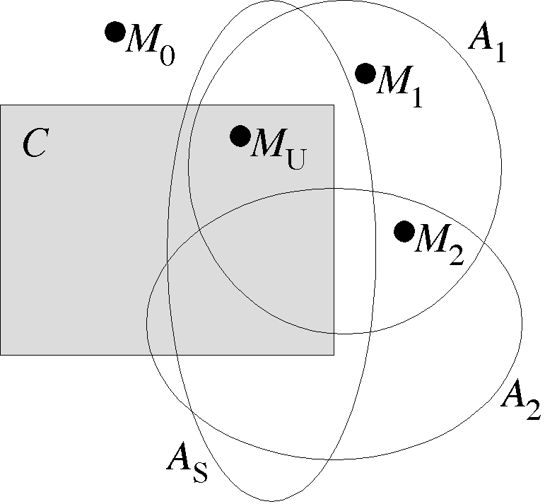

Aggressive Selection

Aim to reduce intersection of axioms and conjecture
Prefer axiom with model of its negation, selected axioms, and conjecture
C =
b
E
1
=
a | b
E
2
=
b => a
E
3
=
(~a & (b | c)) | (a & ~b & ~c)
E
4
=
b | (a <=> c)
There is a model of
{~
E
3
, E
4
, C
}
, but not of
{~
E
1
, E
4
, C
}
Negated conjecture =
~b
Selected
Model
Axiom
1
{ }
{ a, ~b, ~c}
E
4
2
{
E
4
}
{~a, ~b, ~c}
E
3
Cannot be used strictly